For more video content, check out TTK's Youtube Channel!
Please find below a few video tutorials regarding:
1. Global overview of TTK
2. TTK installation
3. TTK in
action!
·
a) with scalar data
·
b) with bivariate scalar data
·
c) with uncertain scalar data
·
d) with time-varying scalar data
·
e) with ensemble scalar data
·
f) with high-dimensional / point cloud data
·
g) misc features
4. TTK in-situ
·
a)
Cinema features
·
b)
TTK with Catalyst
·
c) Compression
5. TTK development
·
a)
with Python
·
b) with VTK/C++
·
c) with pure C++
·
d) extending TTK with a new module
·
e) extending TTK with a new module: an introduction
with Betti numbers
1. Global overview of TTK
This talk gives a global overview of TTK. After introducing the main concepts behind TTK's usage, we demo how to use it with simple examples in ParaView and Python. Then, we present an overview of TTK's capabilities, going from simple critical point extraction to more advanced features (Reeb graphs, Morse-Smale complexes, distances and barycenters of persistence diagrams, etc) as well as TTK's current capabilities for processing point cloud data.
2. TTK installation
This video shows how to install TTK on a fresh new install of Ubuntu Linux 16.10.Update: TTK is now officially integrated in ParaView. Please see our installation page to discover the most recent and simplest installation procedures.
3. TTK in action!
In the following, we assume that you successfully installed TTK (see the above video and our installation page). We will also assume that you downloaded the TTK data tarball from our download page (for instance, into your~/Downloads/ directory). From there,
enter the following commands under Linux (omit the $
character) to decompress the data tarball:$ mkdir ~/ttk$ mv ~/Downloads/ttk-data-1.3.0.tar.gz ~/ttk/$ cd ~/ttk$ tar xvzf ttk-data-1.3.0.tar.gz$ rm ttk-data-1.3.0.tar.gzYou can now proceed with the following videos to see how to reproduce the examples shown in the gallery section with the example data-sets you have just de-compressed.
Note to Python users
Note that, for each of the following examples, once in ParaView, you have the possibility to export the example into a python script (that you can later edit according to your own needs) by clicking on
File, then Save State... and by selecting the Python state file (*.py) extension as described in the
overview video above (see also the
following page for further information regarding TTK's usage with Python).
Please also visit the TTK example website for a large collection of analysis pipelines in Python!
Now, let's see TTK in action!
a) With scalar data
Dragon demoAssuming you properly installed TTK and decompressed the TTK data tarball as described at the beginning of this section, you can now reproduce the Dragon demo by entering the following commands (omit the$ character):$ cd ~/ttk/ttk-data-1.3.0
More details on the TTK example website! Update: as of version 0.9.6, there is no need to check the box "UseInputOffsetField". Input offsets are now automatically retrieved from the data, if present. To force the usage of a specific field as vertex offset (advanced usage), check the box "ForceInputOffsetField". Update: as of version 0.9.3, the TTK module "Contour Forests" is marked as deprecated, in favor of a newer module, "Merge and Contour Tree (FTM)", implementing a recently introduced algorithm using task-based Fibonacci heaps. Performances should be greatly improved. When using this module, to smooth the contour tree skeleton, please use the "Geometry Smoother" module on the "Skeleton Arcs" output and check the box "Use Input Mask Field" to constrain the location of the skeleton critical nodes. |
Morse persistence demoAssuming you properly installed TTK and decompressed the TTK data tarball as described at the beginning of this section, you can now reproduce the Morse persistence demo by entering the following commands (omit the$ character):$ cd ~/ttk/ttk-data-1.3.0
More details on the TTK example website! Update: as of version 0.9.6, there is no need to check the box "UseInputOffsetField". Input offsets are now automatically retrieved from the data, if present. To force the usage of a specific field as vertex offset (advanced usage), check the box "ForceInputOffsetField". |
Built-in example 1Assuming you properly installed TTK and decompressed the TTK data tarball as described at the beginning of this section, you can now reproduce the first built-in example demo by entering the following commands (omit the$ character):
$ cd ~/ttk/ttk-data-1.3.0
More details on the TTK example website! Update: as of version 0.9.6, there is no need to check the box "UseInputOffsetField". Input offsets are now automatically retrieved from the data, if present. To force the usage of a specific field as vertex offset (advanced usage), check the box "ForceInputOffsetField". |
Interaction site demoAssuming you properly installed TTK and decompressed the TTK data tarball as described at the beginning of this section, you can now reproduce the interaction site demo by entering the following commands (omit the$ character):$ cd ~/ttk/ttk-data-1.3.0
$ paraview states/interactionSites.pvsm
More details on the TTK example website! 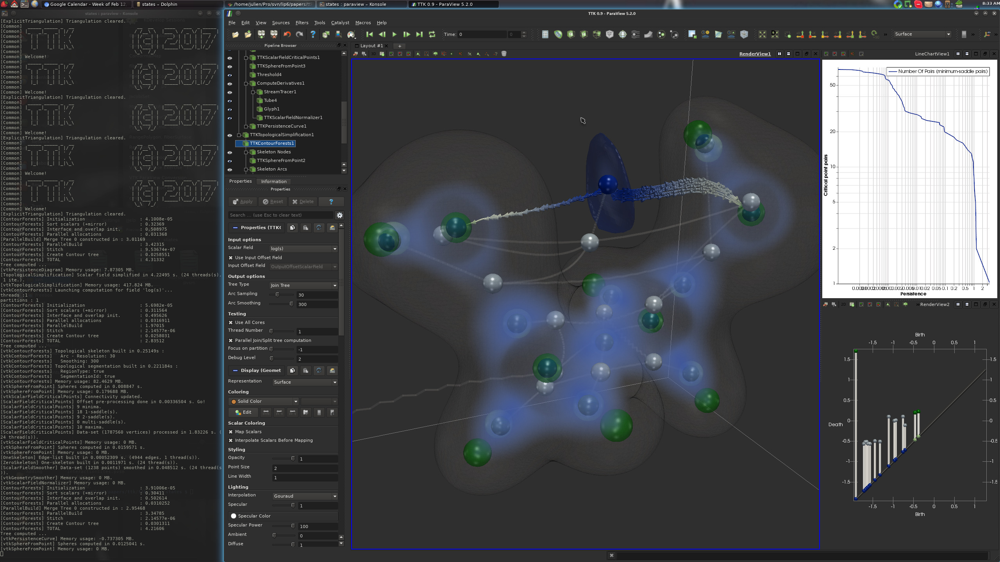 |
Viscous fingering demoAssuming you properly installed TTK and decompressed the TTK data tarball as described at the beginning of this section, you can now reproduce the viscous fingering demo by entering the following commands (omit the$ character):$ cd ~/ttk/ttk-data-1.3.0
$ paraview states/viscousFingering.pvsm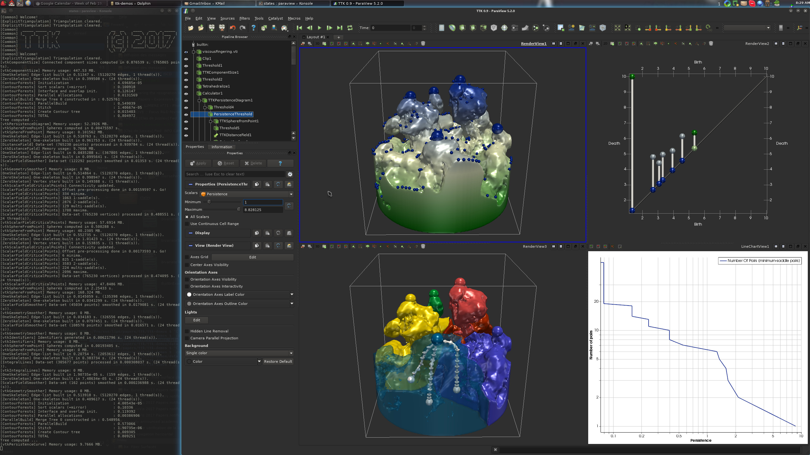 |
Morse molecule demoAssuming you properly installed TTK and decompressed the TTK data tarball as described at the beginning of this section, you can now reproduce the Morse molecule demo by entering the following commands (omit the$ character):$ cd ~/ttk/ttk-data-1.3.0
$ paraview states/morseMolecule.pvsm
More details on the TTK example website! |
Tectonic puzzle demo (video to come)Assuming you properly installed TTK and decompressed the TTK data tarball as described at the beginning of this section, you can now reproduce the tectonic puzzle demo by entering the following commands (omit the$ character):$ cd ~/ttk/ttk-data-1.3.0$ paraview states/tectonicPuzzle.pvsm
More details on the TTK example website! 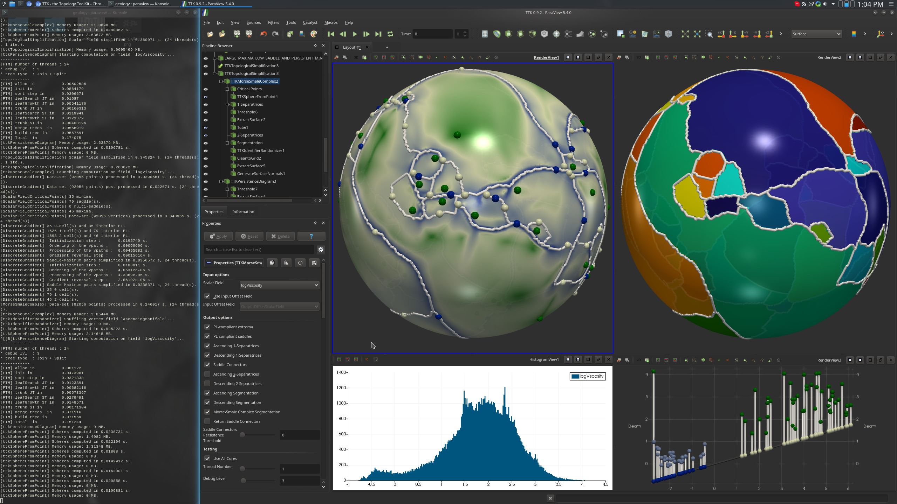 |
Ocean vortices demo (video to come)Assuming you properly installed TTK and decompressed the TTK data tarball as described at the beginning of this section, you can now reproduce the ocean vortices demo by entering the following commands (omit the$ character):$ cd ~/ttk/ttk-data-1.3.0$ paraview states/oceanVortices.pvsm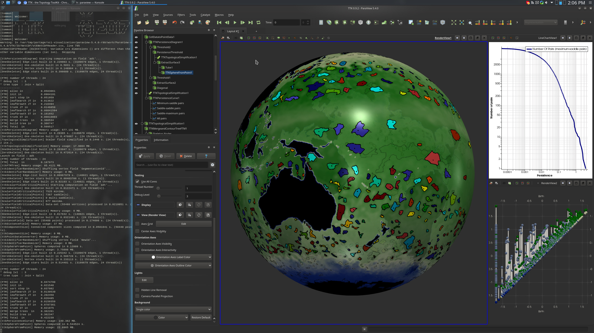 |
Contour around point demoAssuming you properly installed TTK and decompressed the TTK data tarball as described at the beginning of this section, you can now reproduce the Contour around point demo by entering the following commands (omit the$ character):$ cd ~/ttk/ttk-data-1.3.0$ paraview states/contourAroundPoint.pvsm |
CT bones demo (video to come)Assuming you properly installed TTK and decompressed the TTK data tarball as described at the beginning of this section, you can now reproduce the CT bones demo by entering the following commands (omit the$ character):$ cd ~/ttk/ttk-data-1.3.0$ paraview states/ctBones.pvsm
More details on the TTK example website! 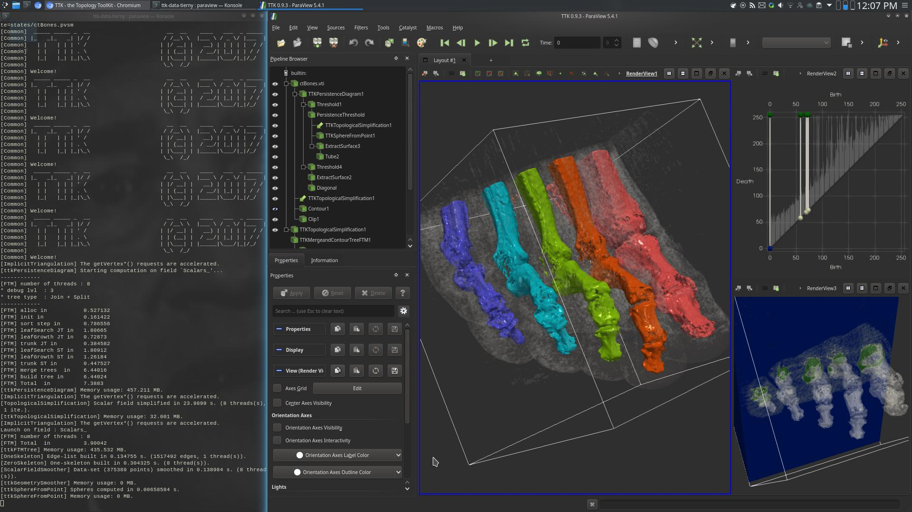 |
Tribute to Edelsbrunner and Harer's book (video to come)Assuming you properly installed TTK and decompressed the TTK data tarball as described at the beginning of this section, you can now reproduce the tribute to Edelsbrunner and Harer's book demo by entering the following commands (omit the$ character):$ cd ~/ttk/ttk-data-1.3.0$ paraview states/tribute.pvsm
More details on the TTK example website! 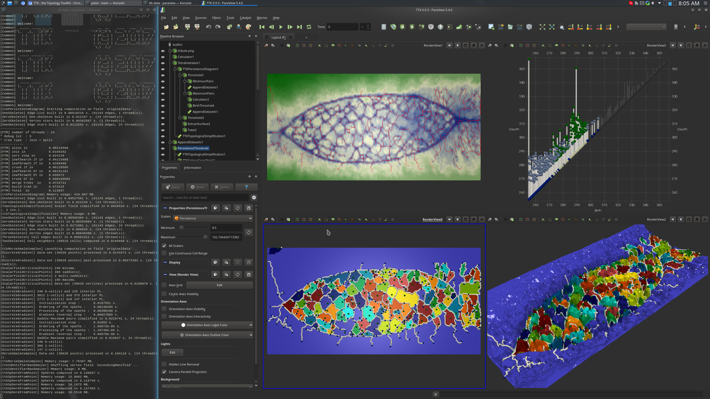 |
Image processing demoAssuming you properly installed TTK and decompressed the TTK data tarball as described at the beginning of this section, you can now reproduce the image processing demo by entering the following commands (omit the$ character):$ cd ~/ttk/ttk-data-1.3.0$ paraview states/imageProcessing.pvsm
More details on the TTK example website! 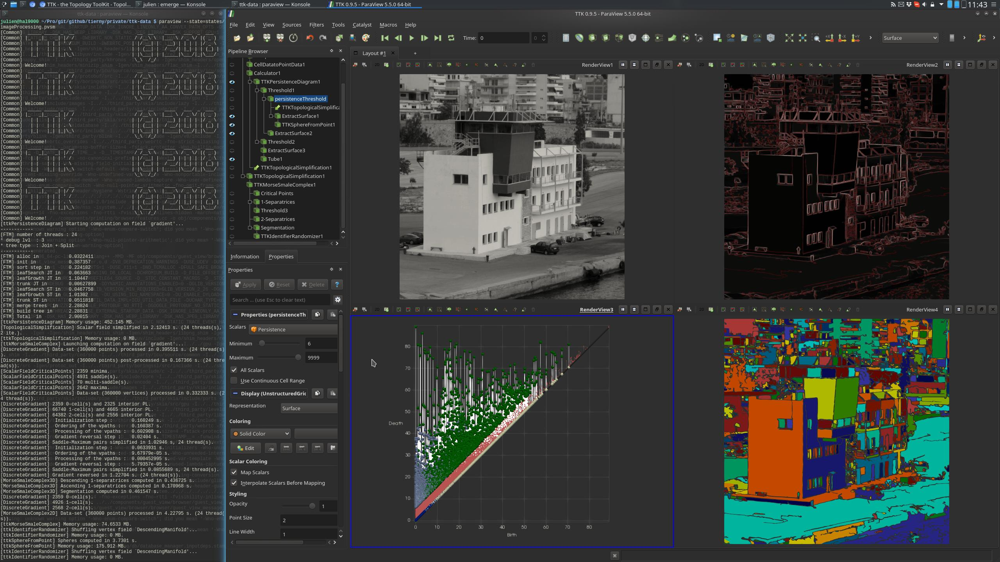 |
Harmonic skeleton demoAssuming you properly installed TTK and decompressed the TTK data tarball as described at the beginning of this section, you can now reproduce the Harmonic skeleton demo by entering the following commands (omit the$ character):$ cd ~/ttk/ttk-data-1.3.0$ paraview states/harmonicSkeleton.pvsm
More details on the TTK example website! 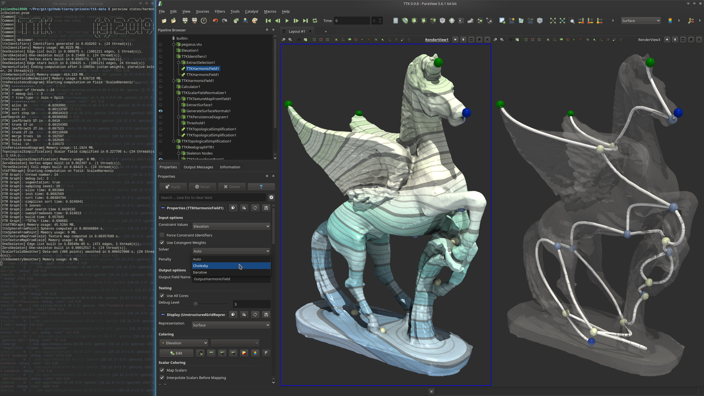 |
Morse-Smale quadrangulation demoAssuming you properly installed TTK and decompressed the TTK data tarball as described at the beginning of this section, you can now reproduce the Morse-Smale quadrangulation demo by entering the following commands (omit the$ character):$ cd ~/ttk/ttk-data-1.3.0$ paraview states/morseSmaleQuadrangulation.pvsm
More details on the TTK example website! |
Persistent Generators AT demoAssuming you properly installed TTK and decompressed the TTK data tarball as described at the beginning of this section, you can now reproduce the Persistent Generators AT demo by entering the following commands (omit the$ character):$ cd ~/ttk/ttk-data-1.3.0$ paraview states/persistentGenerators_at.pvsm
More details on the TTK example website! 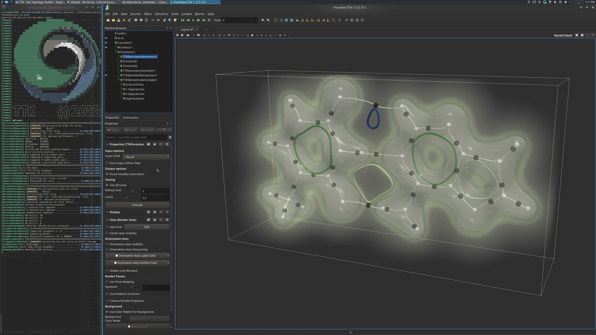 |
Persistent Generators Dark Sky demoAssuming you properly installed TTK and decompressed the TTK data tarball as described at the beginning of this section, you can now reproduce the Persistent Generators Dark Sky demo by entering the following commands (omit the$ character):$ cd ~/ttk/ttk-data-1.3.0$ paraview states/persistentGenerators_darkSky.pvsm
More details on the TTK example website! 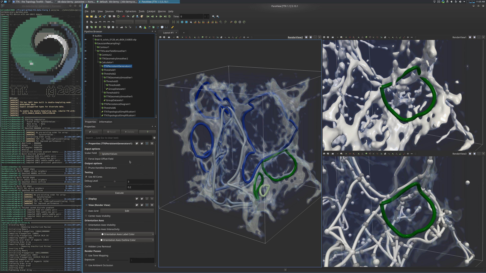 |
b) With bivariate scalar data
Built-in example 2Assuming you properly installed TTK and decompressed the TTK data tarball as described at the beginning of this section, you can now reproduce the second built-in example by entering the following commands (omit the$ character):
$ cd ~/ttk/ttk-data-1.3.0
More details on the TTK example website! Update: as of version 1.3.0, the TTK module "RangePolygon" is marked as deprecated, in favor of built-in ParaView filters. Instead, please use the filter "PolyLineSource" to create your polygon on top of the Continuous Scatter Plot (CFP). Next, to map the input bivariate data to your polygon, use the filter "ResampleWithDataset" (with the CSP as a source, and the polygon as a target). Finally, apply the filter "Tetrahedralize", to transform the polygon into a simplicial representation. At this point, the output of "Tetrahedralize" is a valid polygon input for the TTK module "FiberSurface" (and can fully replace the deprecated "RangePolygon"). |
Bivariate toy demoAssuming you properly installed TTK and decompressed the TTK data tarball as described at the beginning of this section, you can now reproduce the bivariate toy demo by entering the following commands (omit the$ character):$ cd ~/ttk/ttk-data-1.3.0 |
Bivariate toy CSP peeling demo (video tutorial to come)Assuming you properly installed TTK and decompressed the TTK data tarball as described at the beginning of this section, you can now reproduce the bivariate toy CSP peeling demo by entering the following commands (omit the$ character):$ cd ~/ttk/ttk-data-1.3.0 |
Mechanical demoAssuming you properly installed TTK and decompressed the TTK data tarball as described at the beginning of this section, you can now reproduce the mechanical demo by entering the following commands (omit the$ character):$ cd ~/ttk/ttk-data-1.3.0 |
c) With uncertain scalar data
Built-in example 3Assuming you properly installed TTK and decompressed the TTK data tarball as described at the beginning of this section, you can now reproduce the third built-in example demo by entering the following commands (omit the$ character):$ cd ~/ttk/ttk-data-1.3.0 |
Uncertain starting vortex demoAssuming you properly installed TTK and decompressed the TTK data tarball as described at the beginning of this section, you can now reproduce the uncertain starting vortex demo by entering the following commands (omit the$ character):$ cd ~/ttk/ttk-data-1.3.0
$ paraview states/uncertainStartingVortex.pvsm
More details on the TTK example website! |

d) With time-varying scalar data
Time tracking demoAssuming you properly installed TTK and decompressed the TTK data tarball as described at the beginning of this section, you can now reproduce the time tracking demo by entering the following commands (omit the$ character):$ cd ~/ttk/ttk-data-1.3.0
$ paraview states/timeTracking.pvsm
More details on the TTK example website! 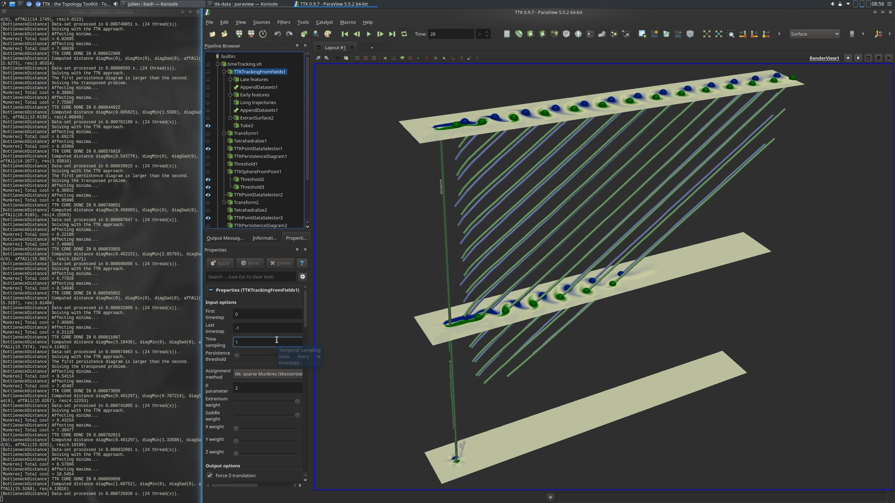 |
Merge tree feature tracking demoAssuming you properly installed TTK and decompressed the TTK data tarball as described at the beginning of this section, you can now reproduce the merge tree feature tracking demo by entering the following commands (omit the$ character):$ cd ~/ttk/ttk-data-1.3.0 |
Merge tree temporal reduction demoAssuming you properly installed TTK and decompressed the TTK data tarball as described at the beginning of this section, you can now reproduce the merge tree temporal reduction demo by entering the following commands (omit the$ character):$ cd ~/ttk/ttk-data-1.3.0
$ paraview states/mergeTreeTemporalReduction.pvsm
More details on the TTK example website! 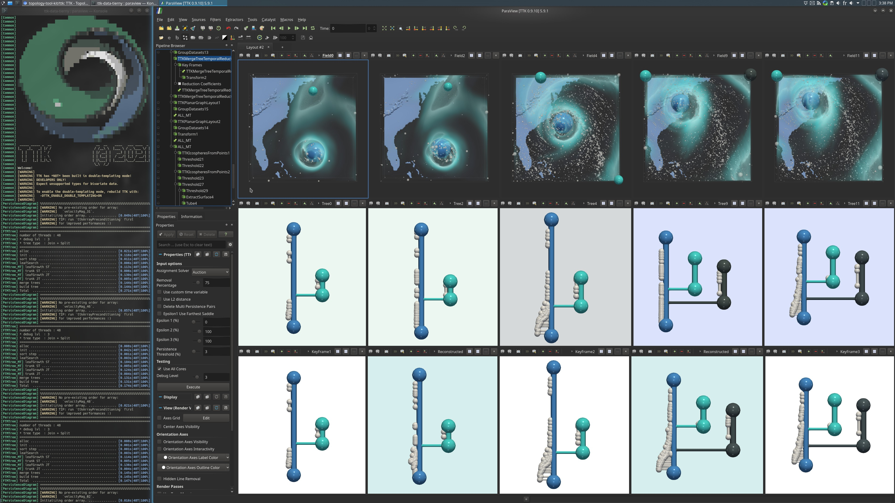 |
Nested tracking graph demoAssuming you properly installed TTK and decompressed the TTK data tarball as described at the beginning of this section, you can now reproduce the nested tracking graph demo by entering the following commands (omit the$ character):$ cd ~/ttk/ttk-data-1.3.0
$ paraview states/nestedTrackingFromOverlap.py
More details on the TTK example website! 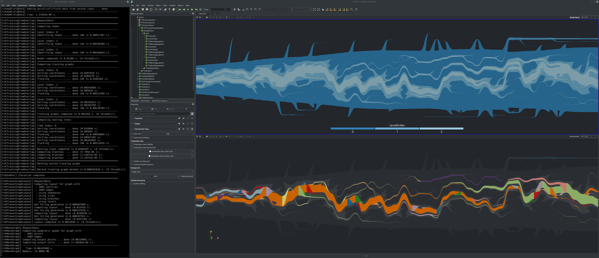 |
e) With ensemble scalar data
Persistence diagram distance demoAssuming you properly installed TTK and decompressed the TTK data tarball as described at the beginning of this section, you can now reproduce the persistence diagram distance demo by entering the following commands (omit the$ character):$ cd ~/ttk/ttk-data-1.3.0$ paraview states/persistenceDiagramDistance.pvsm
More details on the TTK example website! 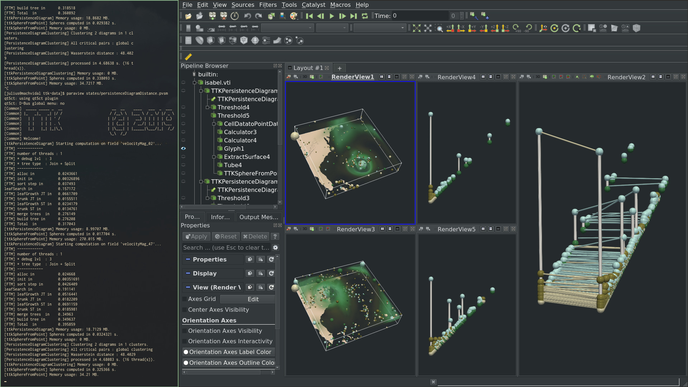 |
Persistence diagram clustering demoAssuming you properly installed TTK and decompressed the TTK data tarball as described at the beginning of this section, you can now reproduce the persistence diagram clustering demo by entering the following commands (omit the$ character):$ cd ~/ttk/ttk-data-1.3.0$ paraview states/persistenceDiagramClustering.pvsm
More details on the TTK example website! 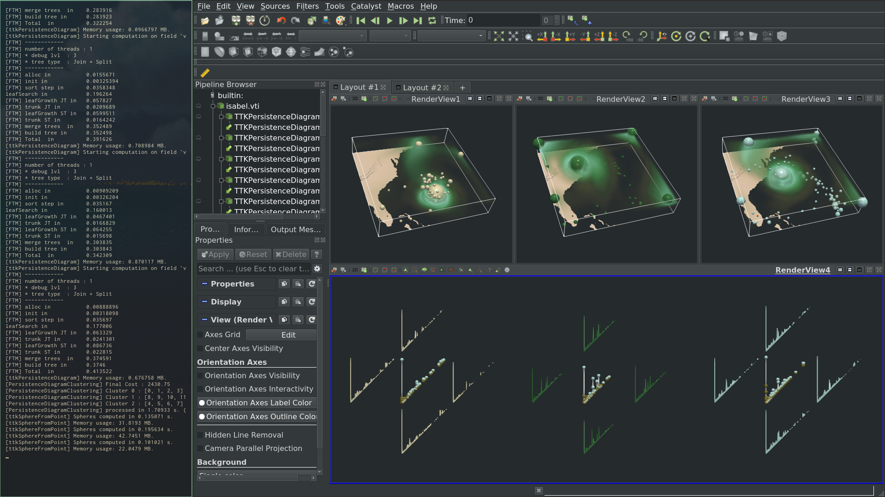 |
Merge tree clustering demoAssuming you properly installed TTK and decompressed the TTK data tarball as described at the beginning of this section, you can now reproduce the merge tree clustering demo by entering the following commands (omit the$ character):$ cd ~/ttk/ttk-data-1.3.0$ paraview states/mergeTreeClusteringClustering.pvsm
More details on the TTK example website! 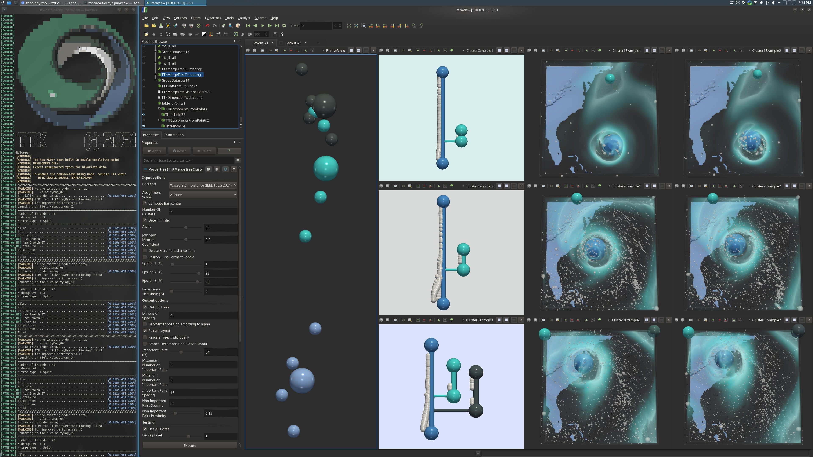 |
Contour tree alignment demoAssuming you properly installed TTK and decompressed the TTK data tarball as described at the beginning of this section, you can now reproduce the contour tree alignment demo by entering the following commands (omit the$ character):$ cd ~/ttk/ttk-data-1.3.0
$ paraview states/contourTreeAlignment.pvsm
More details on the TTK example website! 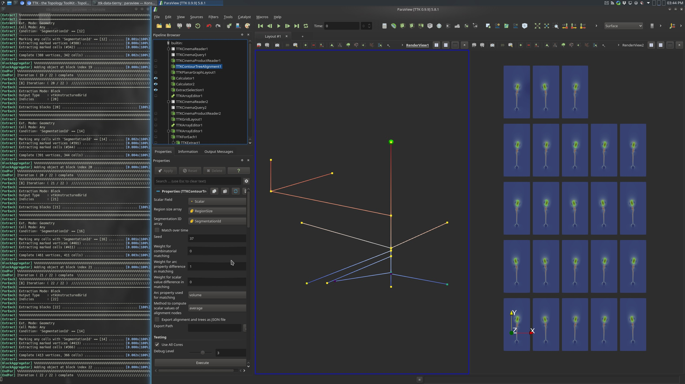 |
Persistent Generators Periodic Picture demoAssuming you properly installed TTK and decompressed the TTK data tarball as described at the beginning of this section, you can now reproduce the Persistent Generators Periodic Picture demo by entering the following commands (omit the$ character):$ cd ~/ttk/ttk-data-1.3.0$ paraview states/persistentGenerators_periodicPicture.pvsm
More details on the TTK example website! 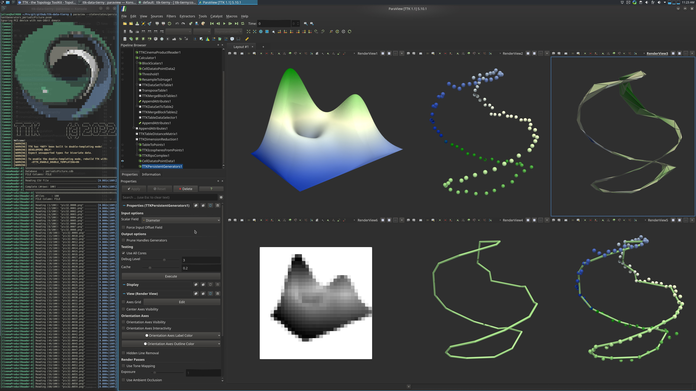 |
Clustering Kelvin Helmholtz Instabilities demoAssuming you properly installed TTK and decompressed the TTK data tarball as described at the beginning of this section, you can now reproduce the Clustering Kelvin Helmholtz Instabilities demo by entering the following commands (omit the$ character):$ cd ~/ttk/ttk-data-1.3.0$ paraview states/clusteringKelvinHelmholtzInstabilities.pvsm
More details on the TTK example website! 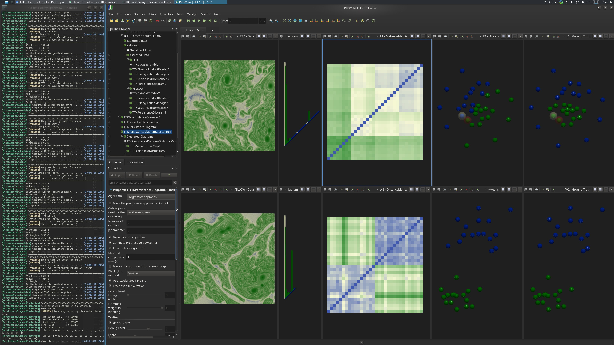 |
f) With high-dimensional / point cloud data
Persistence clustering gallery demo (video tutorial to come)Assuming you properly installed TTK and decompressed the TTK data tarball as described at the beginning of this section, you can now reproduce the persistence clustering gallery demo by entering the following commands (omit the$ character):$ cd ~/ttk/ttk-data-1.3.0
$ paraview states/persistenceClusteringGallery.pvsm
More details on the TTK example website! 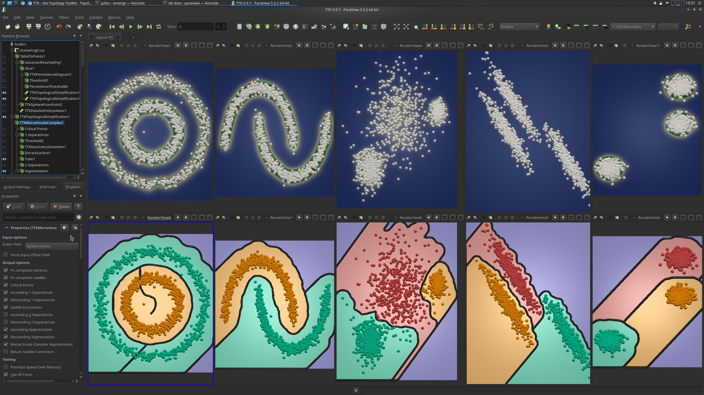 |
Persistence clustering0 demo (video tutorial to come)Assuming you properly installed TTK and decompressed the TTK data tarball as described at the beginning of this section, you can now reproduce the persistence clustering0 demo by entering the following commands (omit the$ character):$ cd ~/ttk/ttk-data-1.3.0
$ paraview states/persistenceClustering0.pvsm
More details on the TTK example website! 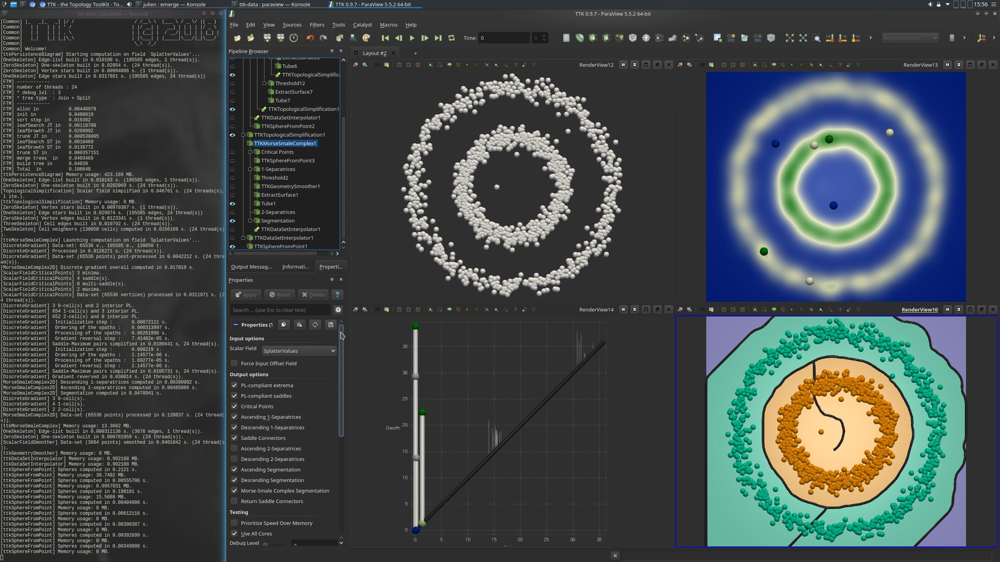 |
Persistence clustering1 demo (video tutorial to come)Assuming you properly installed TTK and decompressed the TTK data tarball as described at the beginning of this section, you can now reproduce the persistence clustering1 demo by entering the following commands (omit the$ character):$ cd ~/ttk/ttk-data-1.3.0
$ paraview states/persistenceClustering1.pvsm
More details on the TTK example website! 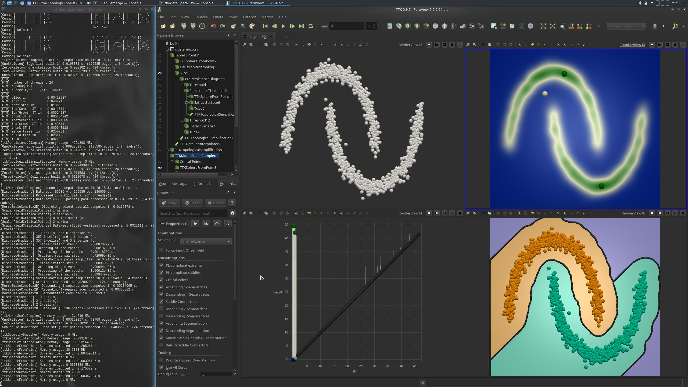 |
Persistence clustering2 demo (video tutorial to come)Assuming you properly installed TTK and decompressed the TTK data tarball as described at the beginning of this section, you can now reproduce the persistence clustering2 demo by entering the following commands (omit the$ character):$ cd ~/ttk/ttk-data-1.3.0
$ paraview states/persistenceClustering2.pvsm
More details on the TTK example website! 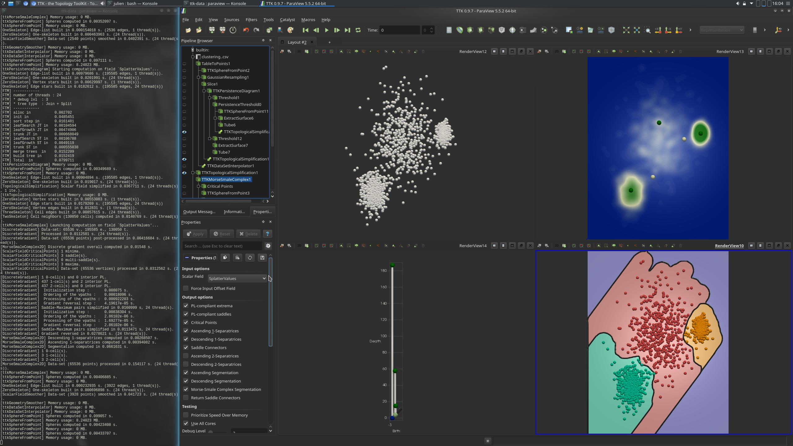 |
Persistence clustering3 demo (video tutorial to come)Assuming you properly installed TTK and decompressed the TTK data tarball as described at the beginning of this section, you can now reproduce the persistence clustering3 demo by entering the following commands (omit the$ character):$ cd ~/ttk/ttk-data-1.3.0
$ paraview states/persistenceClustering3.pvsm
More details on the TTK example website! 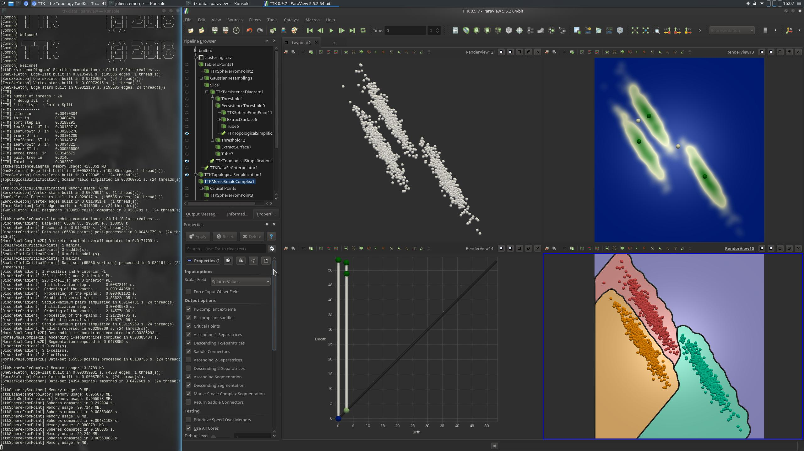 |
Persistence clustering4 demo (video tutorial to come)Assuming you properly installed TTK and decompressed the TTK data tarball as described at the beginning of this section, you can now reproduce the persistence clustering4 demo by entering the following commands (omit the$ character):$ cd ~/ttk/ttk-data-1.3.0
$ paraview states/persistenceClustering4.pvsm
More details on the TTK example website! 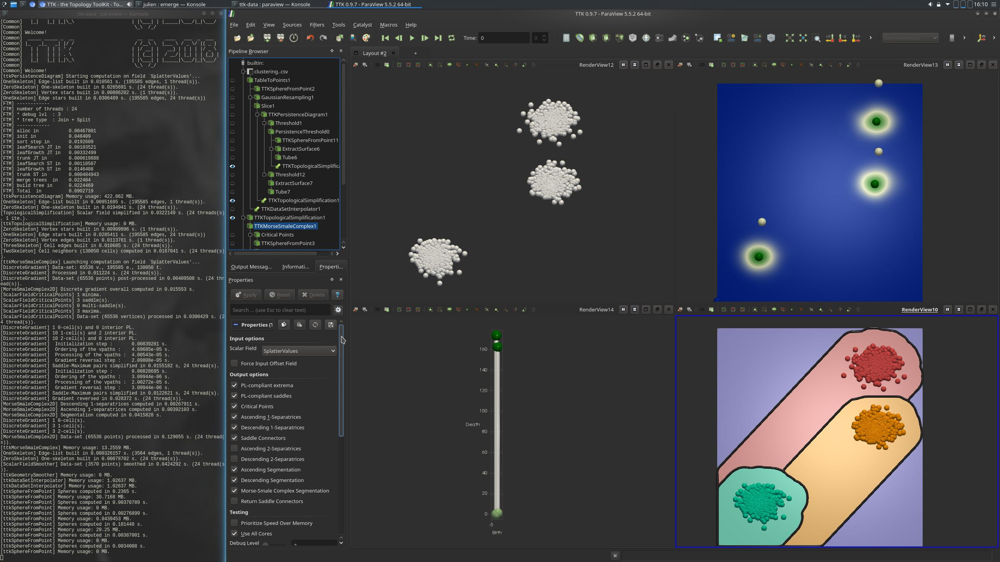 |
Karhunen-Love Digits 64-Dimensions demo (video tutorial to come)Assuming you properly installed TTK and decompressed the TTK data tarball as described at the beginning of this section, you can now reproduce the Karhunen-Love Digits 64-Dimensions demo by entering the following commands (omit the$ character):$ cd ~/ttk/ttk-data-1.3.0
$ paraview states/karhunenLoveDigits64Dimensions.pvsm
More details on the TTK example website! 
|
One-manifold learning demo (video tutorial to come)Assuming you properly installed TTK and decompressed the TTK data tarball as described at the beginning of this section, you can now reproduce the one-manifold learning demo by entering the following commands (omit the$ character):$ cd ~/ttk/ttk-data-1.3.0
$ paraview states/1manifoldLearning.pvsm
More details on the TTK example website! 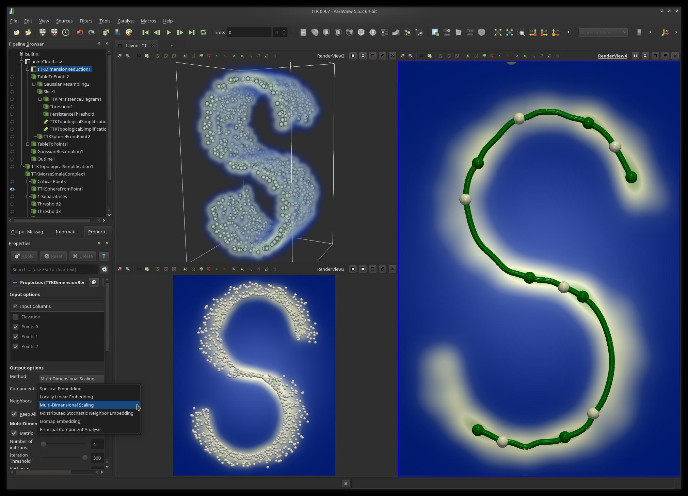 |
One-manifold learning circles demo (video tutorial to come)Assuming you properly installed TTK and decompressed the TTK data tarball as described at the beginning of this section, you can now reproduce the 1-manifold learning circles demo by entering the following commands (omit the$ character):$ cd ~/ttk/ttk-data-1.3.0
$ paraview states/1manifoldLearningCircles.pvsm
More details on the TTK example website! 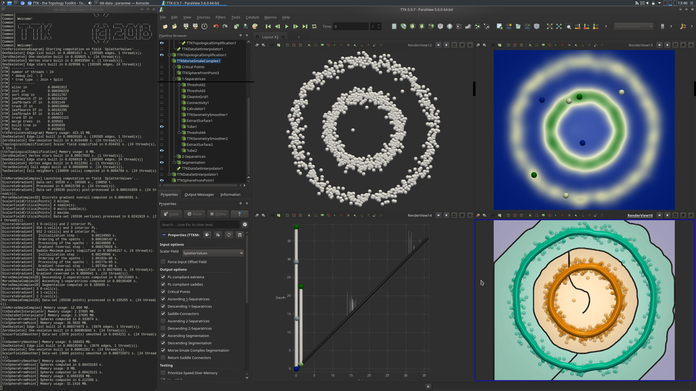 |
Two-manifold learning demo (video tutorial to come)Assuming you properly installed TTK and decompressed the TTK data tarball as described at the beginning of this section, you can now reproduce the two-manifold learning demo by entering the following commands (omit the$ character):$ cd ~/ttk/ttk-data-1.3.0
$ paraview states/2manifoldLearning.pvsm
More details on the TTK example website! 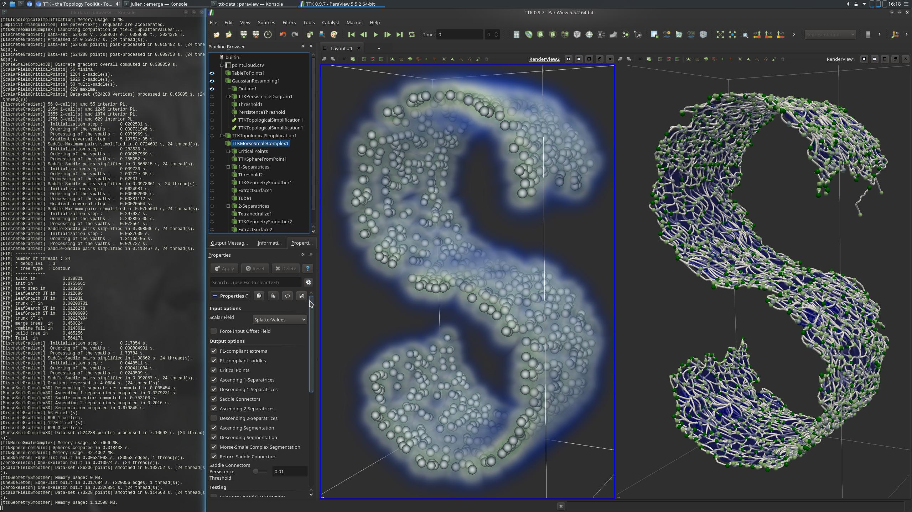 |
Persistent Generators Household Analysis demoAssuming you properly installed TTK and decompressed the TTK data tarball as described at the beginning of this section, you can now reproduce the Persistent Generators Household Analysis demo by entering the following commands (omit the$ character):$ cd ~/ttk/ttk-data-1.3.0$ paraview states/persistentGenerators_householdAnalysis.pvsm
More details on the TTK example website! 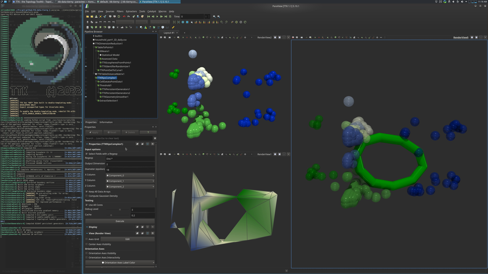 |
g) Misc features
Persistent Generators Casting demoAssuming you properly installed TTK and decompressed the TTK data tarball as described at the beginning of this section, you can now reproduce the Persistent Generators Casting demo by entering the following commands (omit the$ character):$ cd ~/ttk/ttk-data-1.3.0$ paraview states/persistentGenerators_casting.pvsm
More details on the TTK example website! 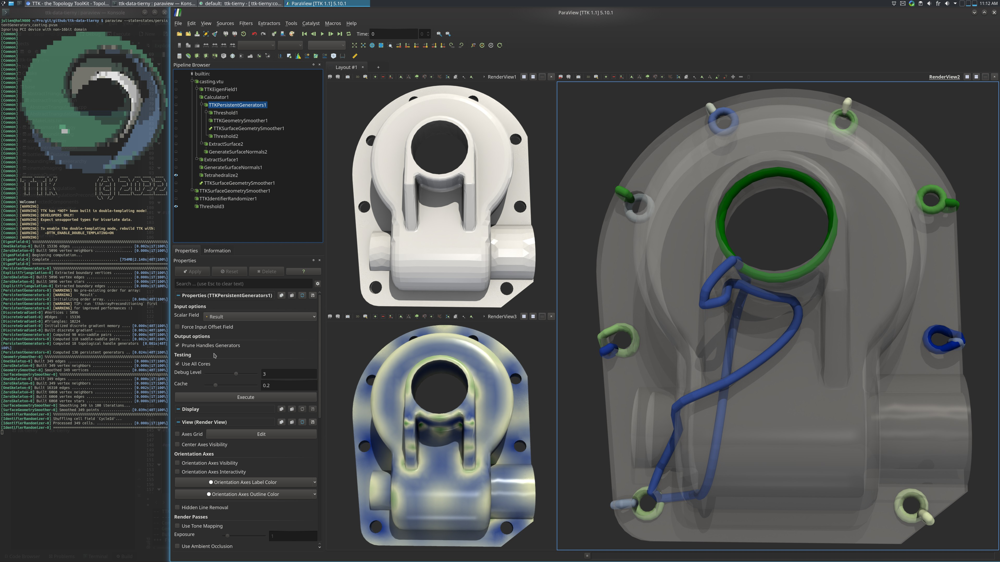 |
Persistent Generators Fertility demoAssuming you properly installed TTK and decompressed the TTK data tarball as described at the beginning of this section, you can now reproduce the Persistent Generators Fertility demo by entering the following commands (omit the$ character):$ cd ~/ttk/ttk-data-1.3.0$ paraview states/persistentGenerators_fertility.pvsm
More details on the TTK example website! 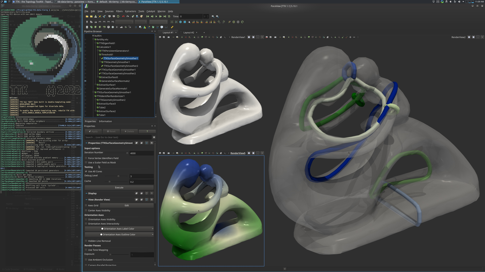 |
Persistent Generators Skull demoAssuming you properly installed TTK and decompressed the TTK data tarball as described at the beginning of this section, you can now reproduce the Persistent Generators Skull demo by entering the following commands (omit the$ character):$ cd ~/ttk/ttk-data-1.3.0$ paraview states/persistentGenerators_skull.pvsm
More details on the TTK example website! 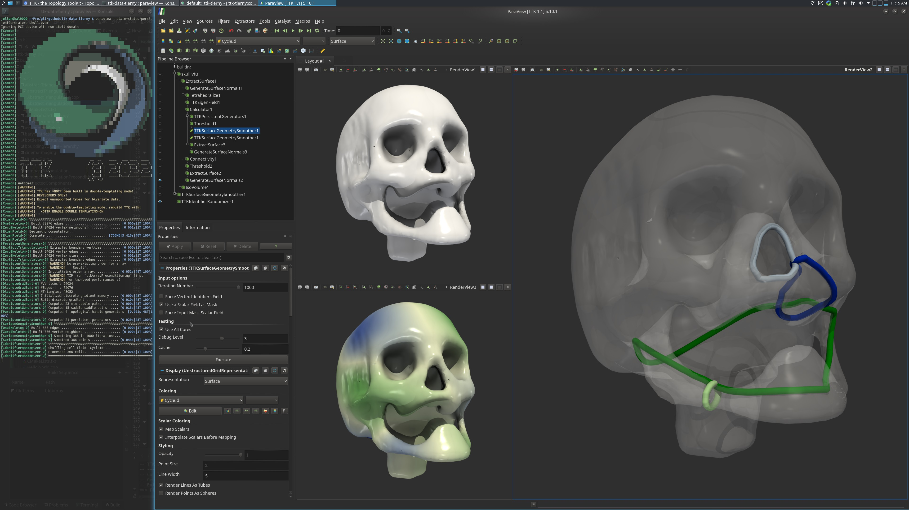 |
Manifold checksAssuming you properly installed TTK and decompressed the TTK data tarball as described at the beginning of this section, you can now reproduce the manifold check example demo by entering the following commands (omit the$ character):$ cd ~/ttk/ttk-data-1.3.0
$ paraview states/manifoldChecks.pvsm
More details on the TTK example website! 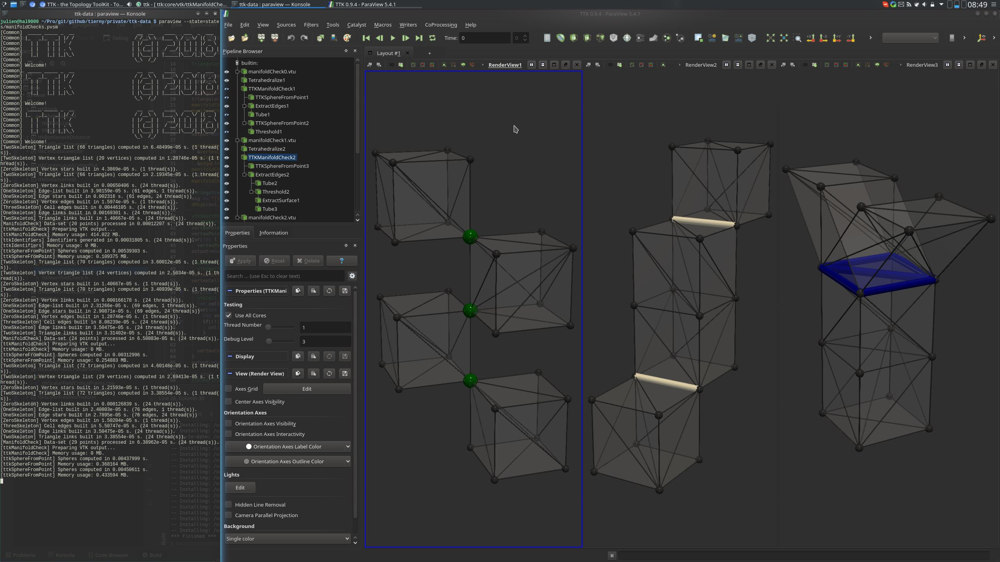 |
4. TTK in-situ
a) Cinema features
This series of tutorials describes the usage of the Cinema features available in TTK.
Geometry approximationAssuming you properly installed TTK and decompressed the TTK data tarball as described at the beginning of this section, you can now reproduce the geometry approximation example demo by entering the following commands (omit the$ character):$ cd ~/ttk/ttk-data-1.3.0
$ paraview states/geometryApproximation.pvsm
More details on the TTK example website! 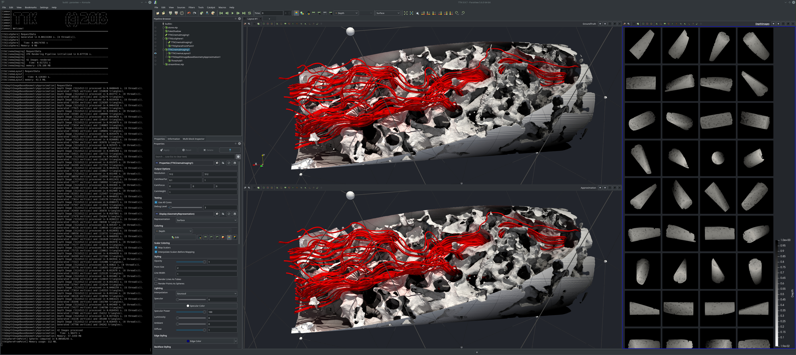 |
Cinema DarkroomAssuming you properly installed TTK and decompressed the TTK data tarball as described at the beginning of this section, you can now reproduce the cinema darkroom demo by entering the following commands (omit the$ character):$ cd ~/ttk/ttk-data-1.3.0 |
b) TTK with Catalyst
This tutorial describes how to install, configure and use TTK in-situ with Catalyst. In particular, it details a computational fluid dynamics use-case with Code_Saturne.> TTK in-situ with Catalyst tutorial
c) Compression
Persistence driven compression demoAssuming you properly installed TTK and decompressed the TTK data tarball as described at the beginning of this section, you can now reproduce the persistence driven compression demo by entering the following commands (omit the$ character):$ cd ~/ttk/ttk-data-1.3.0
$ paraview states/persistenceDrivenCompression.pvsm
More details on the TTK example website! 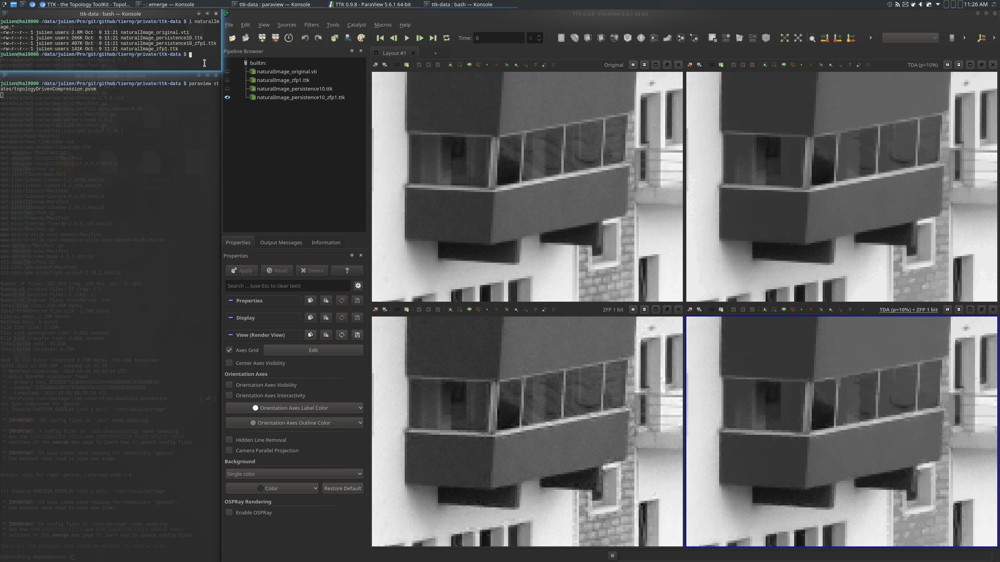 |
5. TTK development
Please find below a few video tutorials showing how to use TTK from your own code (in Python, VTK/C++ or pure C++) as well as how to extend TTK with a new module.
a) With Python
See the following online example for a simple illustration of TTK's usage with Python.See also this detailed tutorial for a more advanced illustration of TTK's usage with Python.
Also, note that each of the above demos (*pvsm state files) can be turned into an independent Python script. Once in ParaView, enter the following menus:
File, Save state... and in the dialog window,
select the entry Python state file (*.py) for the field
Files of type.
b) With VTK/C++
Update: as of version 0.9.3, TTK's usage from third party code has been made even simpler. Now developers can simply use the CMake callfind_package to leverage all of TTK's features!See the following Online example.
c) With pure C++
Update: as of version 0.9.3, TTK's usage from third party code has been made even simpler. Now developers can simply use the CMake callfind_package to leverage all of TTK's features!See the following Online example.
d) Extending TTK with a new module
Update: as of version 0.9.1, TTK's module management scripts are located in the directoryscripts/ of the source tree. These scripts, to be
run from the root of the source tree, will now directly create, delete or
release custom TTK modules within the main source tree. Your custom TTK
modules will then also be compiled during the main build of TTK (see the top
CMakeLists.txt).
For example, to create a new module named "HelloWorld" (as
showcased in the video below), you should now enter the following command from
the root of the TTK source tree:
$ scripts/createTTKmodule.sh HelloWorldFor further information about new modules in TTK, please see our detailed development guidelines.
e) Extending TTK with a new module: an introduction with Betti numbers
This tutorial provides a brief introduction to TTK/ParaView, a step by step introduction for the write-up of TTK modules and some cool exercises about the homology groups of PL 3-manifolds in R3.> Extending TTK with a new module: an introduction with Betti numbers
For further information about new modules in TTK, please see our detailed development guidelines.